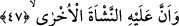
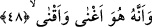
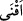

47. Şüphesiz tekrar diriltmek de O’na âiddir.
“Şüphesiz tekrar diriltmek de” yâni yaradılış da “O’na” yâni Allah Teâlâ’ya
“âiddir.” Bu ikinci yaratma işi, vaadine vefâ sebebiyle Allah’ın mahlûkatı ölümünden
sonra diriltmesidir. Bunun başka bir şekilde tefsiri yoktur. Zira bu iş “alâ” harf-i
cerrinin zâhirinden anlaşıldığı üzere ancak Allah’a mahsus olan bir fiildir. Yine bu
âyette hikmet-i ilâhiyyenin; cezâ ve mükâfât vermek ve müminleri tedricen lâyık
olduklarına ulaştırmak için ikinci yaradılışı iktizâ ettiği de açıklanmak istenmiştir. Şâyet
Allah mü’minlerin ecirlerini bu dünyada vermekte acele etseydi, onlardan birine bu
ecrin verilmesiyle diğerlerine dünya dar gelebilirdi. Peki diğer müminlere ne
verebileceği hakkında senin kanâatin nedir? Amel ve ahvâlinin neticelerini âcilen bu
dünyada talep eden bir kimse, edebe aykırı hareket etmiş ve edebin hakikatını iktizâ
etmeyen bir konumda davranmış olur. Ancak kul, ubûdiyet makamında istikamet üzere
olur da Hak kendisine herhangi bir netice veya şerefi nasip ve müyesser kılarsa o zaman
da edebe uygun olan şey, haz bulaşıklarını içerisine sokmamak şartıyla bu neticeyi kabul
etmektir. Özetle hayır, Allah’ın senin için ihtiyar ettiğindedir.
Sûrî olan ikinci dirilişe gelince, bu diriliş kişinin istidâdıyla birlikte sûrî olan
fenâsının kemali ve rûhu kabûle hazır olmaklığı üzere müteretteptir. Diğer mânevî
diriliş de aynı şekildedir. O, bakâ hâlidir. İlahi sıfatlarla muttasıf olmak, istidâd ve feyzi
kabûle hazır olmakla beraber mânevî fenânın tam olmasına ve beşeri sıfatlardan
tamamen sıyrılmaya bağlıdır.
Özetle; her iki diriliş türünde de mizâcın sağlam ve sıhhatli olması gerekir. Bilmez
misin ki cenin bile rahmin bozulması ile düşer ve hattâ rahim fesâda uğradığı zaman hiç
bir alakayı/kan pıhtısını kabul etmez.
İsa (a.s.) bu ikinci yaratma anlamındaki ikinci doğuma işâretle “iki defa doğmamış
olan hiç bir kimse göklerin hakikat ve sırlarına asla vâkıf olamaz.” demiştir.
Semâvâtın melekûtu demek, onun hakikatleri ile envâr ve esrârıdır. Her nebî ve onların
vârisi olan velî kullar, bu hakikate ve ikinci doğuma vâsıl olmuşlardır.
48. Zengin eden de yoksul kılan da O’dur.
Mallar vererek insanları “Zengin eden de yoksul kılan da” malı bol verip memnun
eden, kârı bol kılıp hoşnudluk sağlayan “O’dur.”
(
), malları kazanç için biriktirme mânâsındadır. Yâni bir mal edinip onun kazanç
getirmesi ve artması amacıyla muhâfaza ederek mülkiyetinden çıkarmaksızın
biriktirmektir. Bir darb-ı meselde: “Kötü köpeğin yavrulamasından kazanç sağlama”